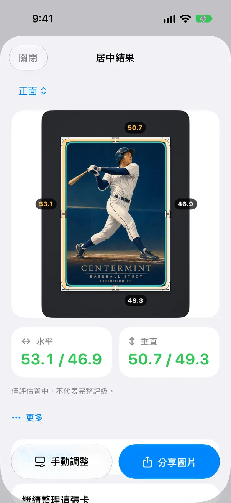

送鑑前，看清卡牌置中
先把邊距量準，App 不確定的線一條條確認，再決定這張卡值不值得花送鑑費。

CenterMint 是一款給集換式卡牌與球員卡收藏者使用的 iPhone App。它根據裸卡照片量測左右、上下的置中比例，對照 PSA、BGS、CGC 公開的置中標準，幫你在花錢送鑑之前做判斷。它是獨立工具，只量置中，不預測完整鑑定分數。
在 App 裡是這樣的
六段短循環，每段一個操作。畫面做了簡化，卡和數字都是真的。
掃描並測量
找出卡邊和印刷邊框，給出左右、上下兩個比例。
逐條對線
放大鏡落到一條線上，需要時拖到邊上，再點「這條對了」。
值不值得送鑑
填入成交價，看扣掉費用後 PSA 10、PSA 9 各賺多少。
四角四邊特寫
從原圖裁出四個角和四條邊，點一張放大看。
送鑑帳本
記下寄出的卡，從準備中、已寄出一路到已返回。
分享工作室
選一種版式，決定要不要顯示測量線。
在你的瀏覽器裡即時繪製。「值不值得送鑑」裡的價格只是範例。
用 CenterMint 量測卡牌置中的步驟
會提醒你哪裡要再看一眼的量測
-
第 1 步，共 5 步
平放拍照
把卡從卡套取出，平放在和卡邊顏色反差明顯的素色墊子上，在均勻光線下拍照，或匯入照片、掃描圖。
自動測量只支援裸卡。 裝在卡套、硬卡套或評級殼裡的卡，需要自己手動對齊四條邊。偵測到卡套時，App 會提示並切換到手動對線。
-
第 2 步，共 5 步
找到邊線
CenterMint 自動給出卡牌外緣和印刷內框。有不確定的線時，會用放大鏡一條條帶你看，並說明原因。
裸卡自動量測：金邊、銀邊逐邊次像素貼合；在布面、花紋墊上，外框也更不容易認錯。
-
第 3 步，共 5 步
逐條確認
確認或微調每一條線，左右、上下比例即時更新。
放大鏡 2.0：顯示真實像素、像素格線和邊緣明暗曲線，對邊連動，方便兩側比較。
免費版量測同樣使用全解析度原圖。
-
第 4 步，共 5 步
對照標準
背面也量一次，正反面分別對照 PSA、BGS 或 CGC 標準。

-
第 5 步，共 5 步
送鑑前再看一眼
送鑑前看一遍四角四邊特寫，再用最近的成交價算一下「值不值得送鑑」。